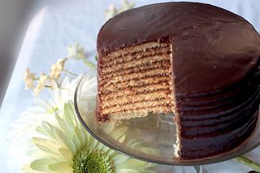

A NOLA Classic, the Doberge Cake

Doberge cake (often pronounced "doh-bear-ge") is a layered dessert originating in New Orleans, Louisiana, adapted by local baker Beulah Ledner from the Hungarian Dobos torte. Still popular in the area, the cake is made of multiple thin layers of cake alternating with dessert pudding. Very often the cakes are made with half chocolate pudding and half lemon pudding. They are covered in a thin layer of butter cream and a fondant shell or, alternatively, a poured glaze on the outside. They are normally made with six or more layers. Traditional flavors are chocolate, lemon or caramel.
Cook: 25 mins
Additional: 2 hrs
Total: 3 hrs 25 mins
Prep: 1 hr
Servings: 16
Yield: 1 9-inch layer cake
Ingredients
Cake:
- 4 eggs, separated
- 3 ½ cups sifted cake flour
- 1 tablespoon baking powder
- ¾ cup butter, room temperature
- 2 cups white sugar
- ½ teaspoon salt
- 1 cup milk, room temperature
- 1 teaspoon lemon juice
- 1 teaspoon vanilla extract
Custard:
- 2 cups white sugar, divided
- ½ teaspoon salt
- ¼ cup all-purpose flour
- ¼ cup cornstarch
- ¼ cup unsweetened cocoa powder
- 2 (1 ounce) squares bittersweet chocolate, chopped
- 4 large eggs, beaten
- 4 cups whole milk
- 1 tablespoon butter, room temperature
- 1 tablespoon vanilla extract
Buttercream Frosting
- 1 cup butter, softened
- 3 cups confectioners' sugar, sifted
- 1 cup unsweetened cocoa powder, sifted
- 1 teaspoon vanilla extract
- 1 tablespoon hot water (Optional)
Directions
- Preheat oven to 375 degrees F (190 degrees C). Grease 3 9-inch cake pans.
- Beat whites of 4 eggs in a glass or metal bowl until foamy. Continue to beat until stiff peaks form. Lift your beater or whisk straight up: the tip of the peak formed by the egg whites should curl over slightly. Set aside. Reserve egg yolks in a small bowl. Sift together cake flour and baking powder in a separate bowl.
- Beat 3/4 cup butter, 2 cups sugar, and 1/2 teaspoon salt with an electric mixer in a large bowl until light and fluffy. The mixture should be noticeably lighter in color. Add reserved egg yolks one at a time, allowing each yolk to blend into the butter mixture before adding the next. Pour in cake flour mixture alternately with 1 cup milk, mixing until just incorporated. Stir lemon juice and 1 teaspoon vanilla extract into batter.
- Whisk beaten egg whites a few times; use a whisk or rubber spatula to fold 1/3 of the egg white mixture into the batter to lighten it. Fold in remaining egg whites, mixing just until combined. Pour batter into prepared pans and spread evenly over bottom.
- Bake in preheated oven until cake is light golden brown and just pulling from the sides of the pan, 15 to 20 minutes. Do not overbake. Cool in pans for 5 minutes, then invert onto cooling racks to cool completely.
- To make custard: combine 1 1/2 cups sugar, 1/2 teaspoon salt, 1/4 cup flour, cornstarch, and 1/4 cup cocoa powder in a saucepan and mix well. In a separate bowl, whisk remaining 1/2 cup sugar into 4 beaten eggs. Pour 4 cups whole milk into saucepan and cook over medium heat, stirring constantly, until mixture begins to boil. Remove from heat and gradually pour hot milk mixture into egg mixture, whisking constantly. Add chopped chocolate and stir until chocolate melts.
- Return custard to saucepan and cook, stirring constantly, over medium heat until mixture has thickened, about 5 minutes. Remove from heat; stir in 1 tablespoon butter and 1 tablespoon vanilla extract. Transfer custard to a bowl and allow to cool.
- To make buttercream: place 1 cup softened butter in a mixing bowl. Gradually beat in 3 cups sifted confectioners' sugar. Beat in 1 cup sifted cocoa powder. Mix in 1 teaspoon vanilla extract to make a smooth frosting. If the frosting is too stiff, add a tablespoon of hot water or as needed, drizzling it very slowly, and mix well until desired consistency is reached.
- To make ganache: place chocolate chips in a large mixing bowl. Heat heavy cream in a saucepan until very hot but not boiling. Remove from heat and pour over the chocolate chips. Let stand for 3 minutes, then whisk, scraping sides and bottom of the bowl, until smooth. Stir in 2 teaspoons vanilla extract. Allow to cool to room temperature, cover, and set aside. Ganache should be spreadable and not firm.
- To assemble cake: using a long serrated knife and a gentle sawing motion, slice each cake layer in half horizontally. Cover cake plate with strips of parchment paper or foil for easier clean up. Put a dab of buttercream in the center of the plate to keep cake from shifting. Set a cake half on the plate.
- Spread custard filling onto cake layer, taking care not to spread it too close to the edge (weight of the cake layers will cause it to spread out). Gently lay another cake round on top of the first and repeat with another custard layer. Repeat with remaining layers and custard, topping custard with the last cake layer. Chill cake for 30 minutes to allow it to firm up.
- Frost top and sides of cake with chocolate buttercream. Chill for 30 minutes, to firm and set.
- Spread frosted cake with ganache. Remove parchment strips or aluminum foil from cake plate. Store cake in the refrigerator.
Credit